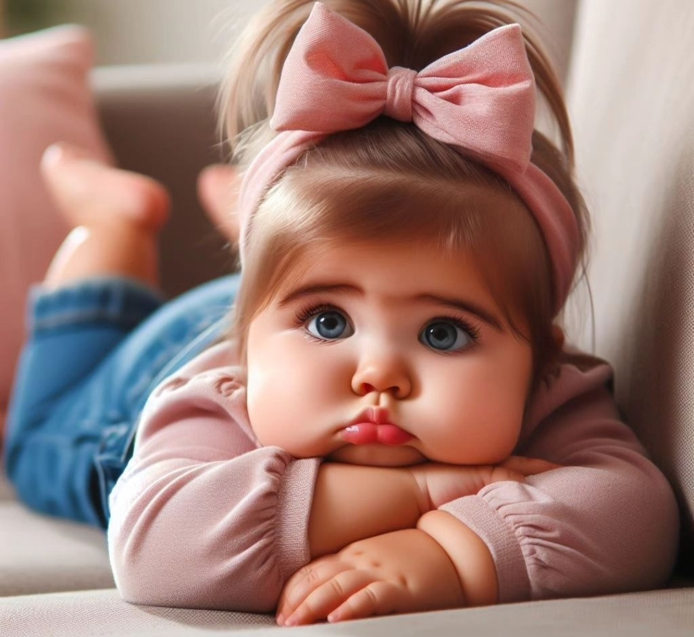
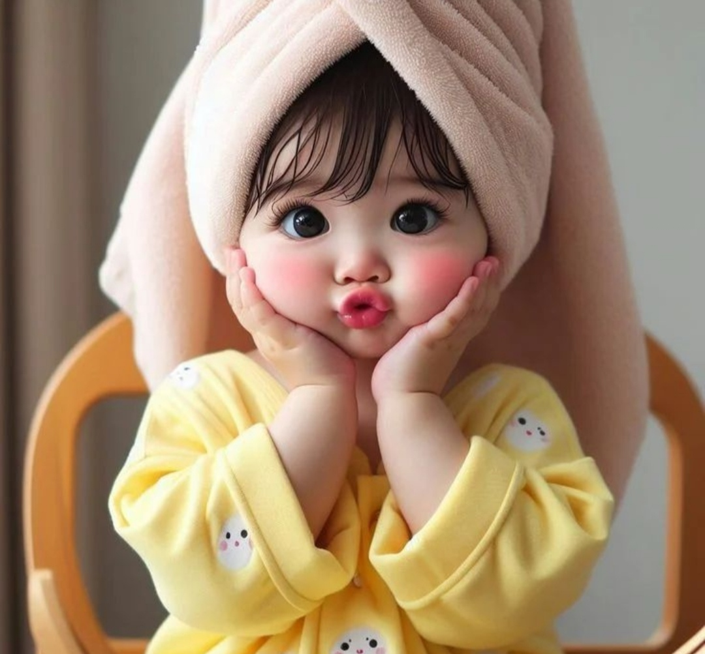
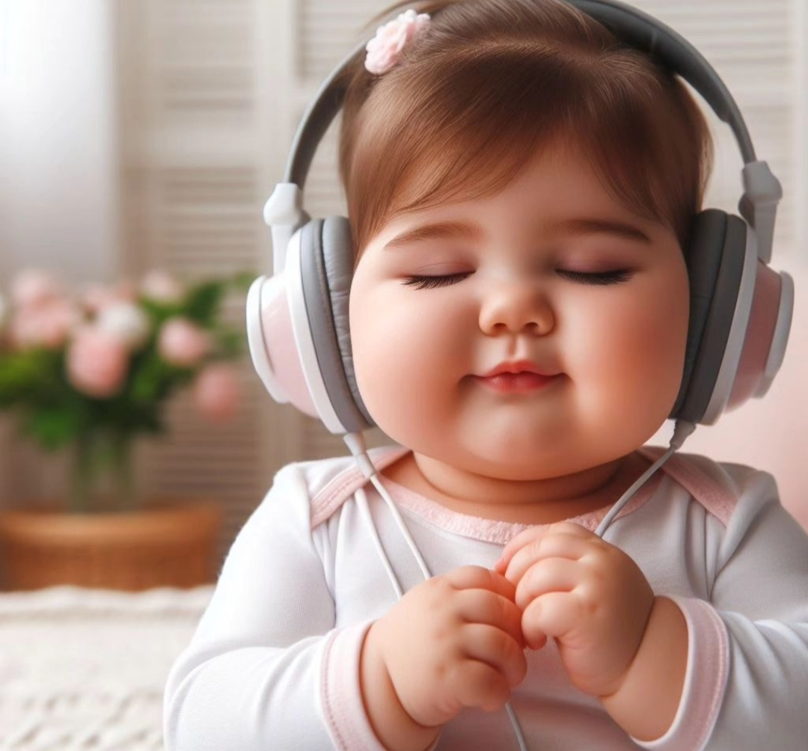
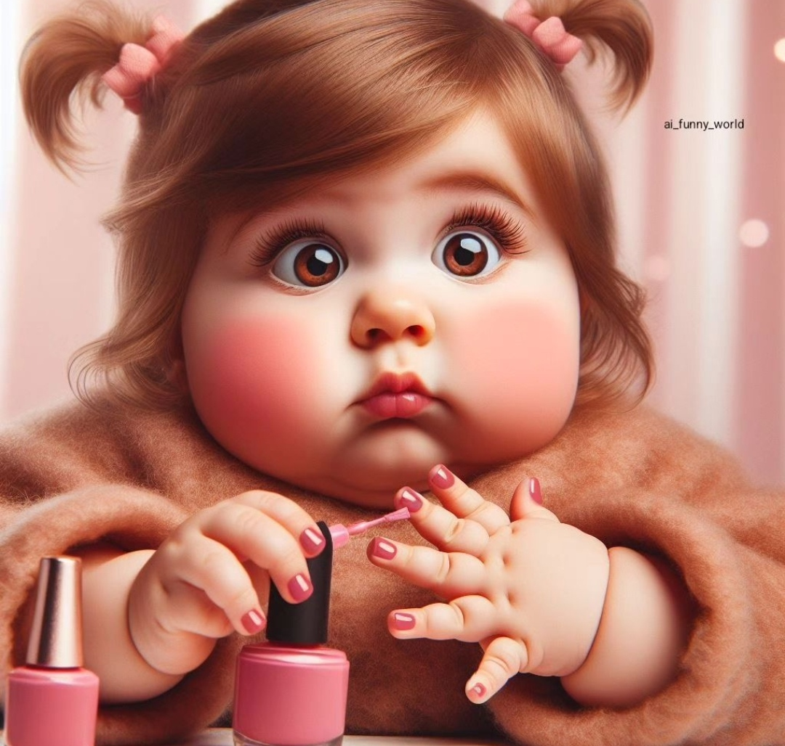
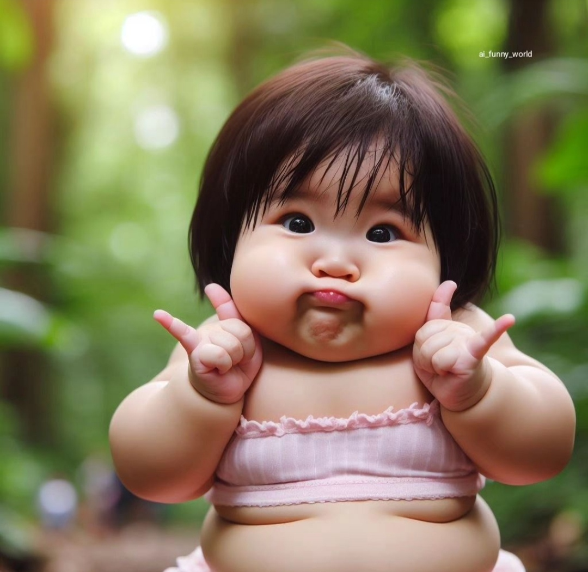

Como definir a una niño feliz? Un niño o niña feliz puede ser una persona que disfruta, que sonríe, que es amable, que se divierte, que no crea conflictos y que no daña a nadie, entre otras muchas cosas. La felicidad de los niños y niñas está en manos de los padres y madres, del profesorado .
 
Un niño que se muestra receptivo a recibir señales de cariño y afecto de sus padres y sus iguales es un mero indicador de que es un niño feliz. Y es que, uno de los rasgos más característicos de la tristeza e, incluso, de la depresión infantil es la evasión y la tristeza en los ojos del menor.
  ¿Qué características tiene un niño feliz?A un niño feliz generalmente no lo cuesta expresar sus sentimientos, especialmente con las personas a las que quiere. Aunque cada uno tenga su propia forma de demostrar su cariño, estas acciones suelen ser espontáneas, repentinas y además denotan que hacerlo les genera alegría.28 ago 2023
Que debe tener un niño para ser feliz? Podemos concluir que la infancia necesita para ser feliz: afecto, respeto, sentirse capaz, conexión, escucha activa, tiempo, juego, límites y normas y una educación basada en valores
¿Qué pasa cuando un niño come comida chatarra? No hay un correcto crecimiento físico por falta de nutrientes, algunas veces presentan anemia. capacidad de concentración disminuye, así como la retención de conceptos. Los niños se distraen fácilmente. obesos o con sobrepeso y eso conlleva a la pérdida de la autoestima.
¿Cómo influye la comida chatarra en la alimentacion de un niño?
¿Qué pasa cuando un niño come comida chatarra?
No hay un correcto crecimiento físico por falta de nutrientes, algunas veces presentan anemia. capacidad de concentración disminuye, así como la retención de conceptos. Los niños se distraen fácilmente. obesos o con sobrepeso y eso conlleva a la pérdida de la autoestima.
¿Cómo afecta la comida chatarra en el crecimiento?
Algunos estudios han demostrado que la comida basura afecta negativamente el crecimiento, pero no solo al respecto de la salud física, sino también para la mental y su bienestar diario.El consumo de productos ultraprocesados incrementa el riesgo de desarrollar enfermedades cardiovasculares (hipertensión, derrames cerebrales, infarto) y diabetes, ya sea que la persona tenga exceso de peso o no
¿Cuáles son las comidas chatarras más dañinas?
Ejemplo de ello, los son las papas fritas, los refrescos, golosinas, pasteles, helados, bizcochos, algunas comidas rápidas, como hamburguesas, pizzas, hot dogs, etc. De acuerdo con Bayside Psychotherapy, los alimentos chatarra tienen un alto contenido de azúcar y de grasas que no son saludables, y esto puede afectar tanto el proceso de aprendizaje, como la retención de información y la capacidad para recordarla, y en los niños incluso puede llegar a afectar la memoria verbal